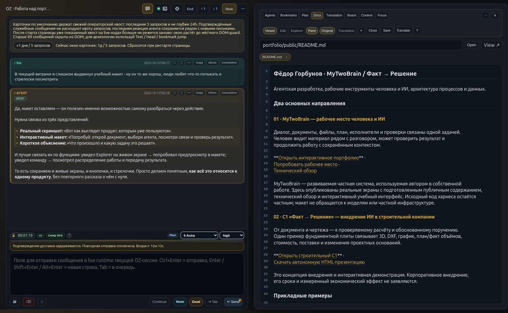
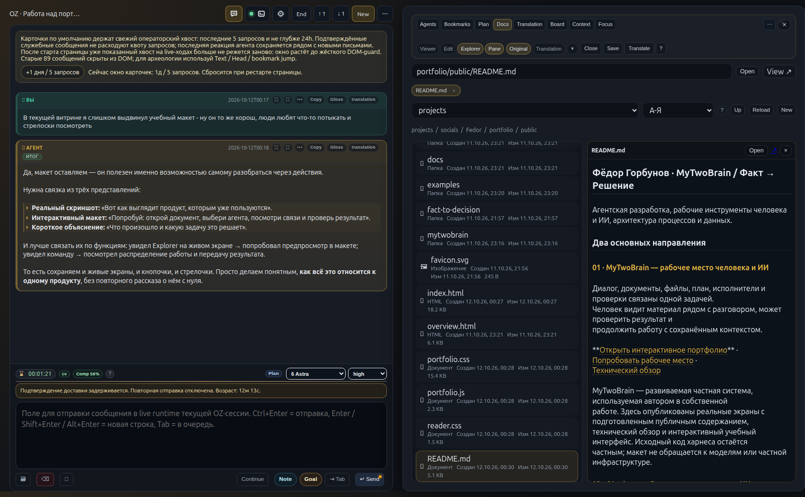
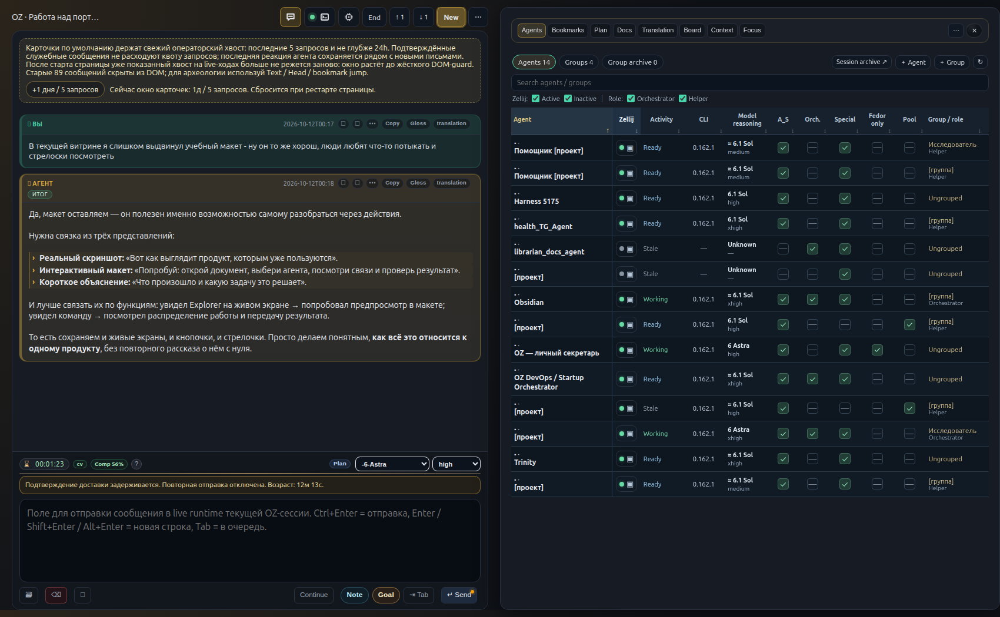
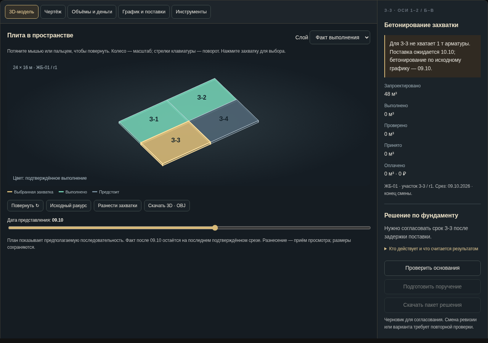

Продолжить после перерыва
История, план и закладки помогают восстановить принятые решения и следующий шаг. Черновик сообщения сохраняется в интерфейсе.
Контекст и закладки ↓01 / Собственный продукт · MyTwoBrain
Я создаю среду, в которой можно вести длительную задачу с агентами: обсуждать, работать с файлами, распределять поручения и проверять результат.
Это мой рабочий интерфейс — UI5175. Диалог слева, материалы и управление справа. Документ, исполнитель и проверка доступны из той же задачи.
Реальные экраны / октябрь 2026

Документ открыт рядом с диалогом. Вкладки, Markdown, копирование, история и настройки модели находятся в одном рабочем месте.

Explorer и предпросмотр связывают обсуждение с конкретным материалом. Просмотр, исходный текст и вкладки документов доступны рядом.

Реестр собирает агентов, группы, модели и состояния. Можно открыть профиль и перейти к диалогу; роли и поручения задают границы работы.
Снимки действующего интерфейса от 12 октября 2026. Для публичного показа выбран открытый документ и фрагмент разговора о портфолио; внутренние идентификаторы и названия проектов скрыты. Состояния сохранены как на момент съёмки.
Что это даёт в работе
Не нужно заново собирать разговор, файлы и поручения при каждом переключении. Смена представления помогает рассмотреть ту же работу с другой стороны.
История, план и закладки помогают восстановить принятые решения и следующий шаг. Черновик сообщения сохраняется в интерфейсе.
Контекст и закладки ↓Документ, перевод и терминология доступны рядом с обсуждением. Модель и глубина рассуждения выбираются под задачу.
Перевод в макете ↓Поручение, выполненные действия и отчёт проверки остаются различимы. Доставка сообщения не подменяет приёмку работы.
Проверка и приёмка ↓От интерфейса — к устройству системы
Harness связывает модель с задачей, инструментами и проверками. UI и API дают человеку и агенту доступ к одним документам и состояниям.
У задачи есть план, ограничения и условия завершения. У каждого агента — роль, поручение и свой результат.
На выходе: понятно, кто делает следующий шаг.
Wiki и Ontology ведут к действующим правилам. DOC Graph связывает материалы; Zettelkasten сохраняет заметки и наблюдения.
На выходе: найдено основание, а не только похожий текст.
Codex CLI выполняет агентный цикл. Процедуры задают порядок работы; API и CLI инструментов дают доступ к разрешённым операциям.
На выходе: файл, изменение или отчёт по задаче.
AST помогает найти затронутую реализацию. Agent-CI проверяет конкретную версию изменений. Журналы и наблюдение показывают исполнение.
На выходе: результат с проверкой и известными ограничениями.
В собственной работе используются диалог с историей, документы, перевод, реестр агентов, планы, закладки и проверки изменений. Оркестрация остаётся управляемой человеком. Доска, контекстные представления и автоматизация восстановления развиваются. Публичная экскурсия не подключена к частному runtime.
Интерактивная экскурсия
Выберите документ, откройте роль исполнителя, восполните пропуск и проверьте результат. Макет объясняет связи на учебных данных — без подключения к частной системе.
Развернуть макет на весь экран ↗02 / Применение опыта · строительная компания
Как связать документ, чертёж, объёмы и сроки — и подготовить обоснованное поручение.

Открыть модель, чертёж и графики ↗Фундаментная плита с четырьмя захватками. Можно вращать модель, открывать чертёж, сравнивать план и факт.
Концепция внедрения и интерактивный пример для обсуждения первого проекта.
Инженерные кейсы
Дополняют два основных продукта: данные, исследовательские интерфейсы и объяснимые решения.
Что делать, если сервис работает, а история неполная? Разобран путь записи и контроль пропусков, дублей и доверия к источнику.
Открыть кейс с иллюстрациями ↗Фёдор Горбунов
Проработка требований, агентная разработка, инструменты и интерфейс совместной работы. Предмет разговора — ваши данные, ожидаемый результат и способ его принять.
Обсудить задачу ↗